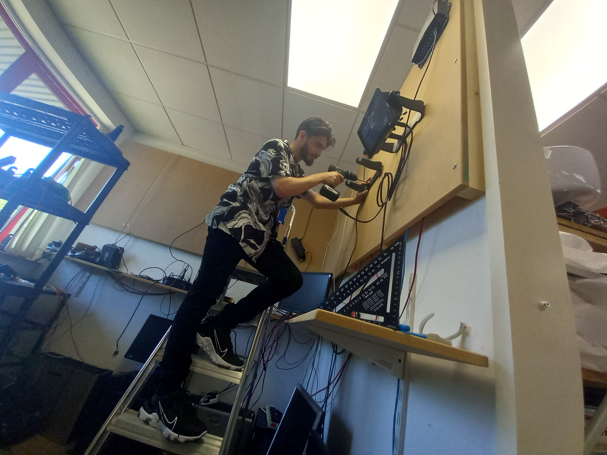
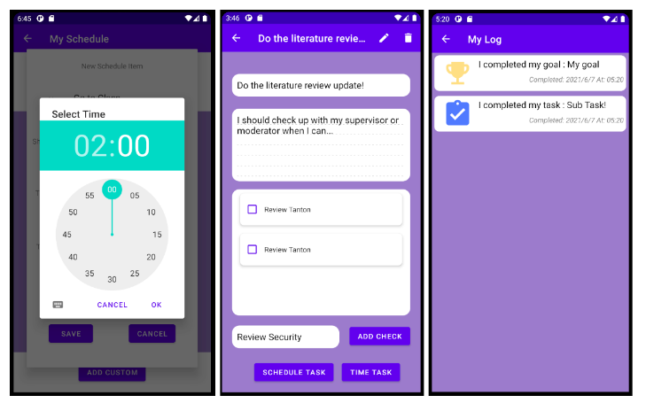
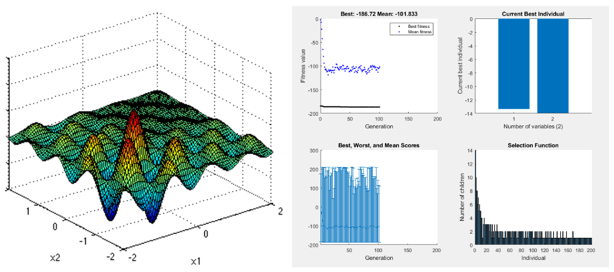
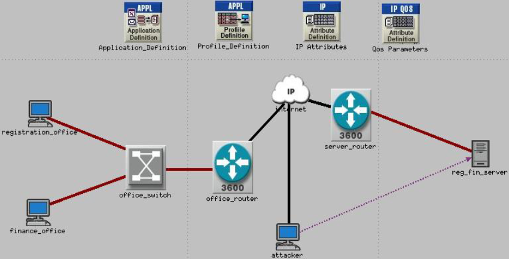
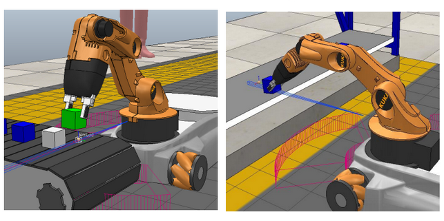

(Me installing new test machines for a new automated test area)
M-health Application (Final Year Project)
A report detailing how I designed, developed, tested and evaluated a system aimed at improving the health and wellness of students and young people using an original methodology and testing method

Neural Network
and Genetic Algorithm

A report detailing how a neural network was created for pattern recognition of iris plant dataset and a genetic algorithm for solving shubert family function global optimization
IoT Botnet Attack Mitigation Experiment

A research poster which reviews current countermeasures against IoT botnet attacks and attempts to apply QoS in a simulated environment to mitigate a botnet attack
Shelf-Stocking Robot
Simulation

A literature review and report about current advancements and solutions for robots in retail use, and designing and simulating a shelf stocking robot
Ethical Hacking -
Inflitration

A report detialing how multiple servers were infiltrated and sensitive data was recovered using a Linux machine utilizing multiple exploitation tools and techniques